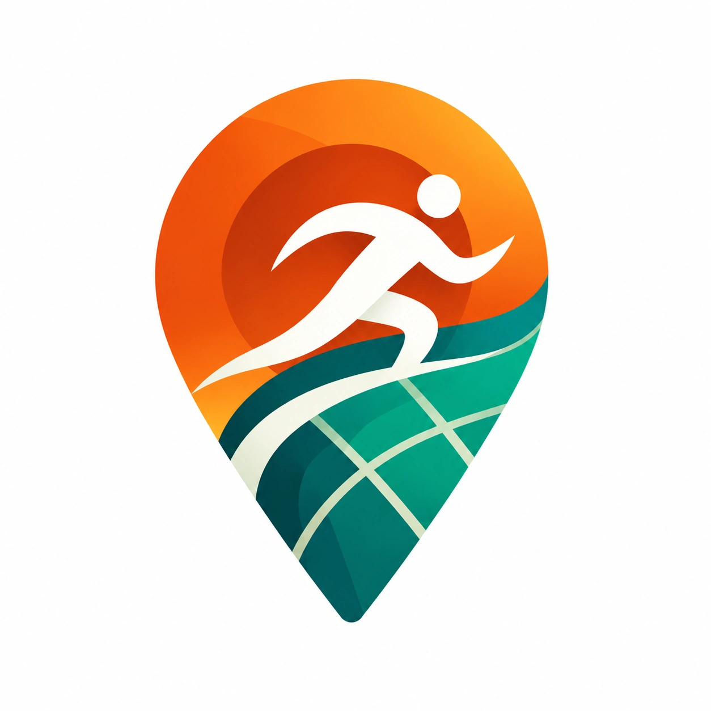
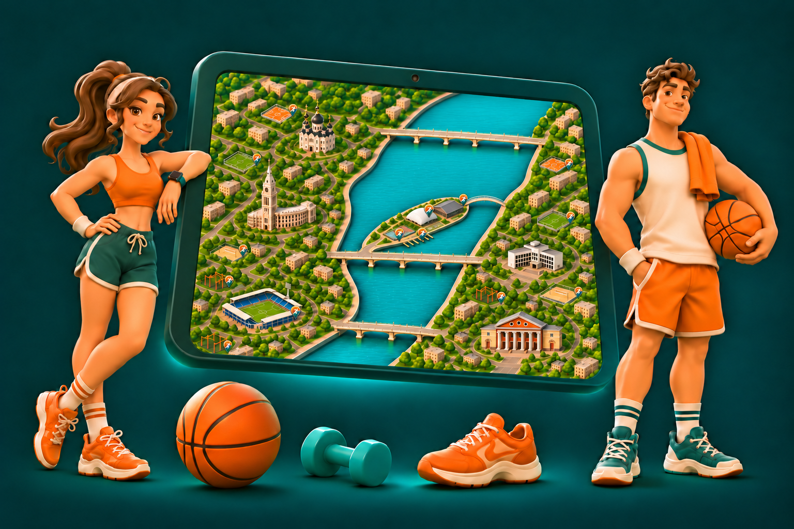
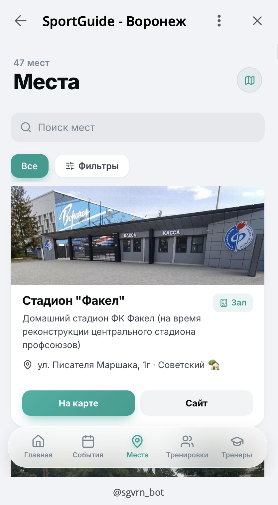
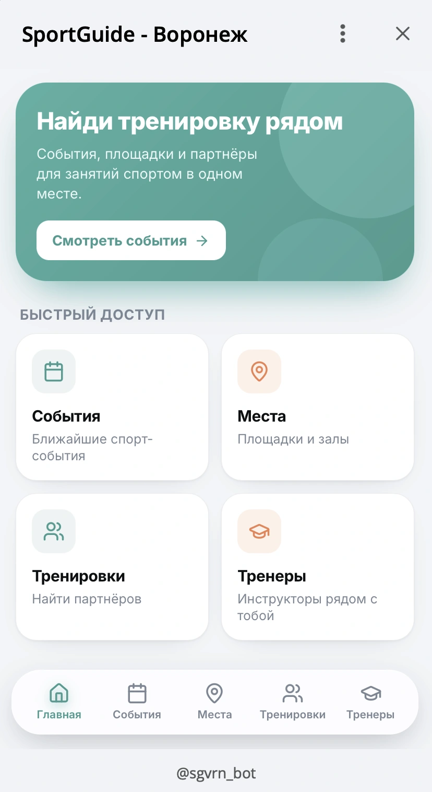
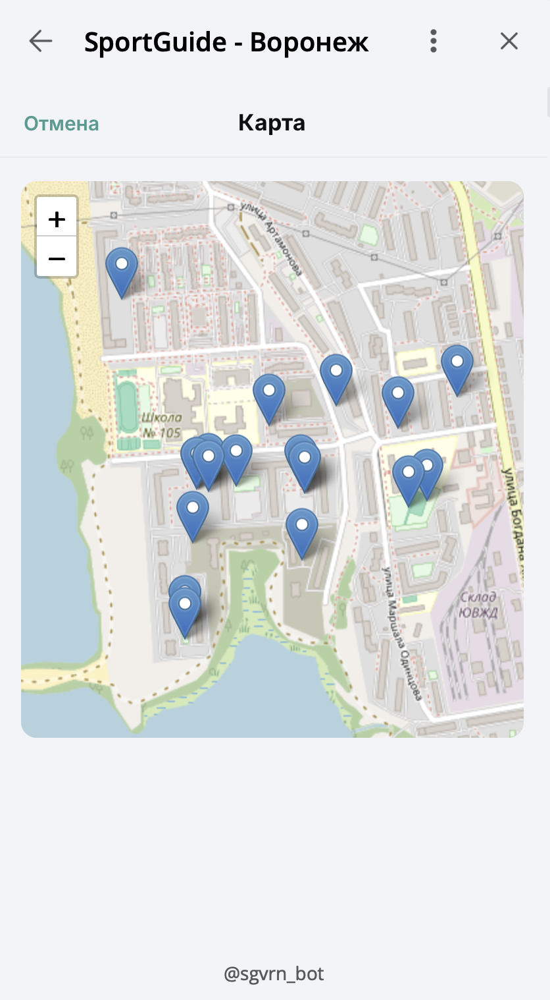
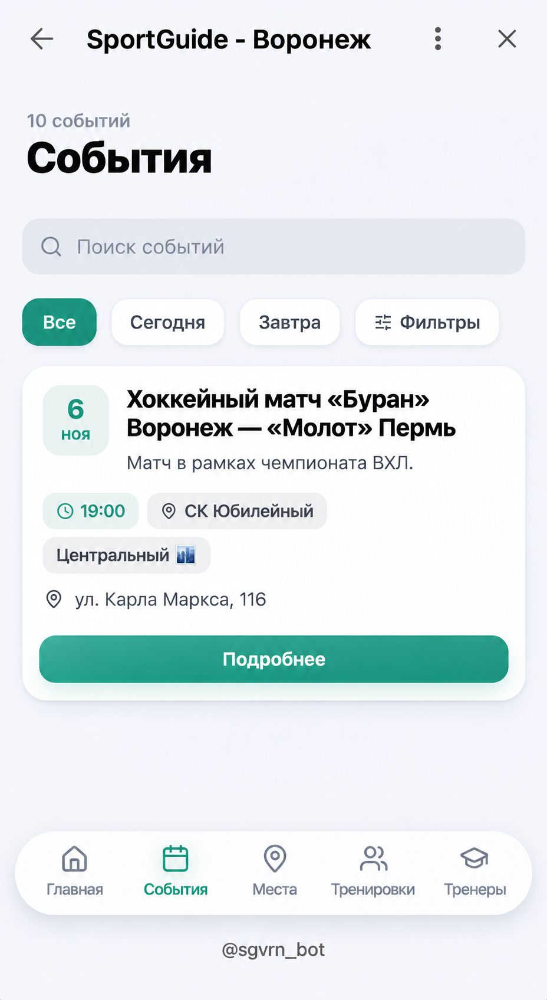
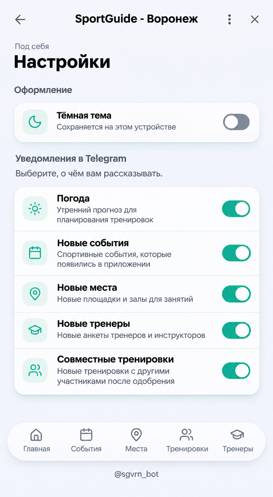

Тренировка под тебя
Опиши цель и сколько у тебя времени.
ИИ поможет составить план занятий в боте.

sportguide В TelegramВОРОНЕЖ · СПОРТ · ТВОИ ЛЮДИ
Найди, где, с кем и как заниматься.
Площадки, события и люди рядом —
в одном Telegram-приложении.

ВОЗМОЖНОСТИ SPORTGUIDE
Находи площадки, события, компанию и тренеров —
прямо в Telegram.


Корты, залы и площадки рядом.
Выбирай по району и виду спорта, смотри на карте.
Спортивные планы на сегодня и завтра.
Следи за тем, что интересно тебе.
Бегать, играть и тренироваться вместе.
Свяжись с организатором в Telegram.
Специалист под твои цели.
Выбирай направление, опыт и удобный формат.
КАРТА СПОРТИВНОГО ГОРОДА
От ближайшей площадки до нового маршрута.
Смотри места на карте и выбирай, где двигаться сегодня.

Описание, адрес, фото и сайт, если он указан.
Из карты можно перейти в Google Maps.


Примеры экранов приложения, не актуальная афишаСОБЫТИЯ И УВЕДОМЛЕНИЯ
Матч, забег или совместная тренировка?
Находи интересное по району, названию и дате.
Быстрый выбор дня помогает найти событие без долгих поисков.
Выбери, о чём рассказывать: события, места, тренеры или совместные тренировки.
Управляй подписками в боте.
Любую из них можно отключить.
ПОМОЩНИК В TELEGRAM
План тренировки, нужные события
и погода — в привычном чате.
Опиши цель и сколько у тебя времени.
ИИ поможет составить план занятий в боте.
Подпишись на новые события, чтобы узнавать о них прямо в Telegram.
Утренний прогноз поможет решить: на пробежку в парк или на тренировку в зал.
ТВОЙ СЛЕДУЮЩИЙ ШАГ
Всё начинается с одного сообщения.
Нажми кнопку или наведи камеру на QR-код.
Открой приложение из меню Telegram-бота.
Найди место, событие или тренировку — и начинай.
Доступно только в Telegram